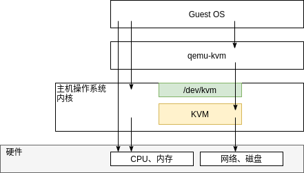

A-2 使用 KVM 构建虚拟环境¶
什么是 KVM？¶
KVM(Kernel-based Virtual Machine)是一种开源虚拟化环境，嵌入在标准Linux内核（2.6.20或更高版本）中。由于KVM是完全虚拟化的，因此无论主机操作系统类型如何，虚拟机操作系统（Guest OS）都可以安装多种类型操作系统，如Microsoft Windows或Linux。
在KVM上，硬件仿真器由“QEMU”（Queue Emu）完成，QEMU通过 /dev/kvm 文件利用硬件虚拟化辅助功能。
硬件虚拟化辅助功能可通过硬件（处理器）代理软件执行的虚拟化操作，显著降低虚拟化开销。KVM完全虚拟化需要使用硬件虚拟化辅助功能。对于具有硬件虚拟化辅助功能的PC，通常可以在BIOS或EFI配置界面中启用或禁用硬件虚拟化辅助功能。
完全虚拟化和半虚拟化¶
有两种类型的硬件平台虚拟化：
完全虚拟化（Full Virtualization）
完全模拟硬件。无需更改硬件上运行的操作系统即可正常运行。
半虚拟化（Para Virtualization）
模拟几乎与物理主机相同的硬件，但与完全模拟有所不同。提供对硬件仿真进行更改后的驱动，以缩短运行时间。您需要更改Guest OS的驱动程序以支持半虚拟化提供的仿真硬件。
KVM以经被开发为完全虚拟化，但现在可以通过采用半虚拟化驱动程序（VirtIO）等方式实现半虚拟化。
使用 KVM¶
使用KVM在一台物理主机上创建多个虚拟机。虚拟机（VM，Virtual Machine）是由虚拟化软件管理的虚拟计算机。在虚拟机上安装CentOS作为OS。此外，本附录还包括5台VM，因此PC的内存大小必须至少为8GB。
本节介绍如何使用 Minimal ISO(CentOS-7-x86_64-Minimal-1804.iso)安装 CentOS。因此，CUI设置了较少的磁盘供安装使用。